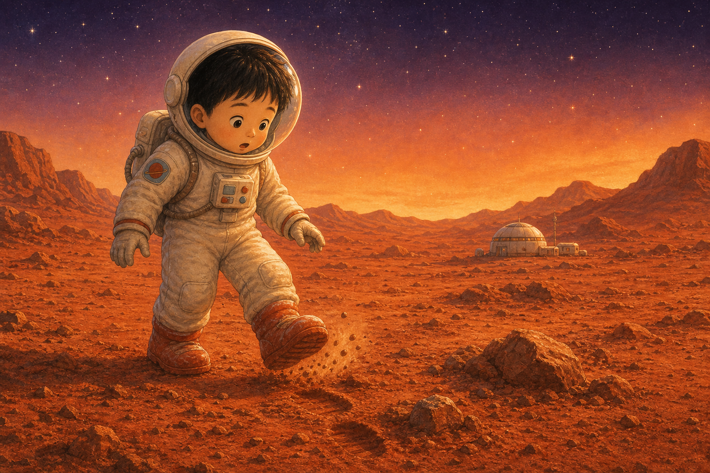
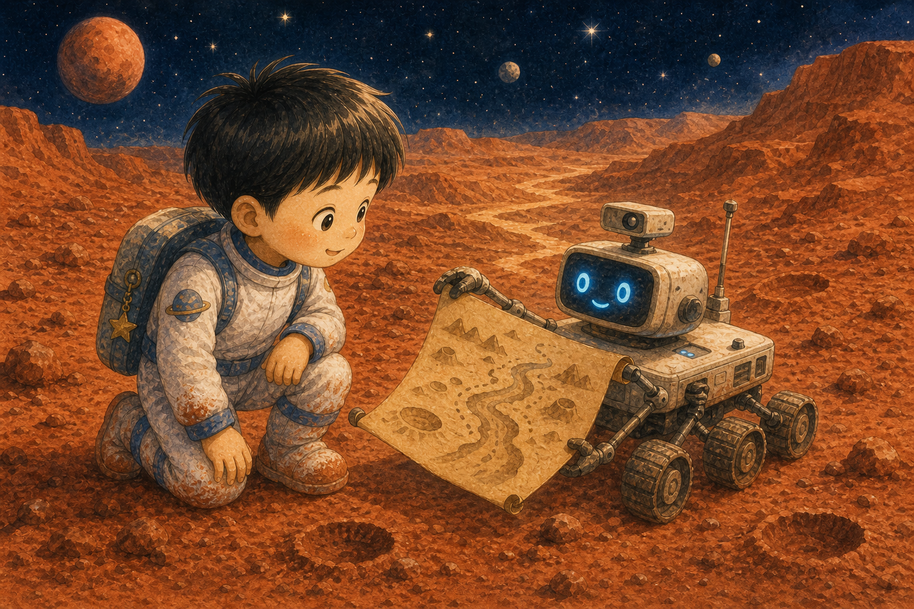
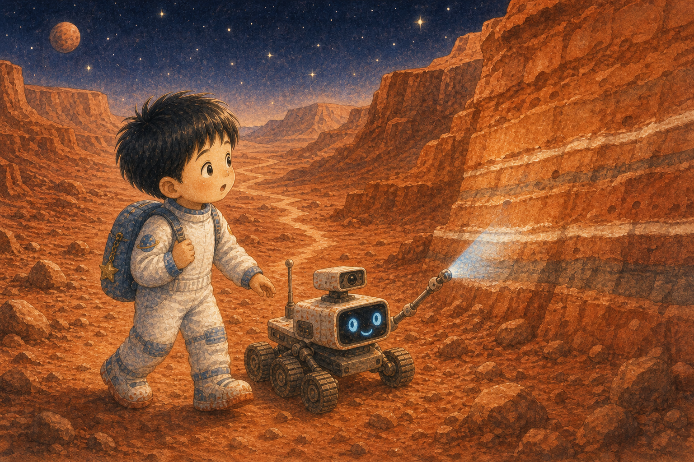
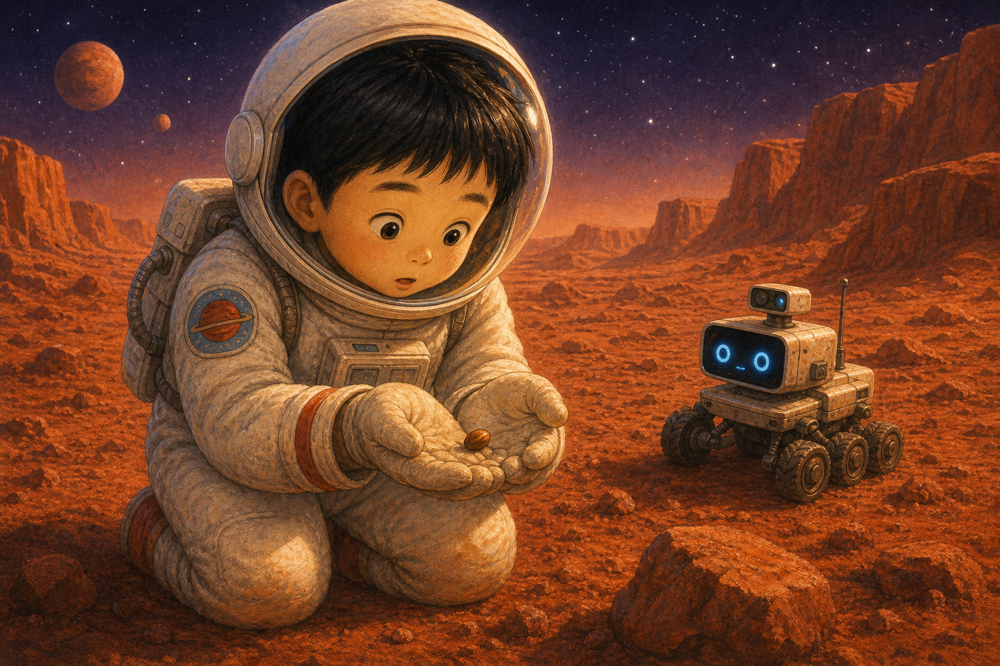
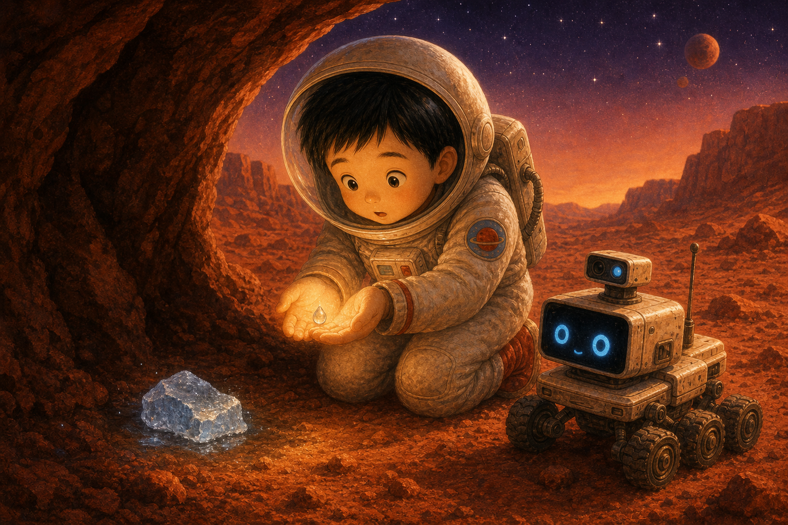
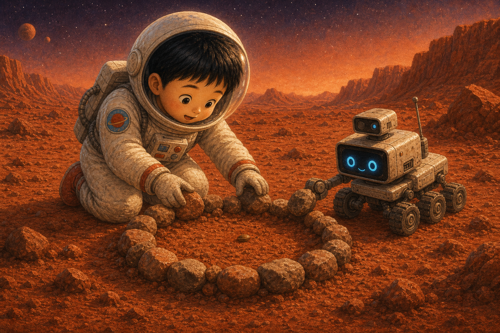
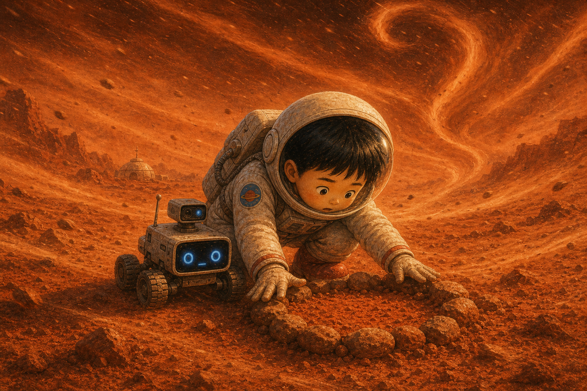
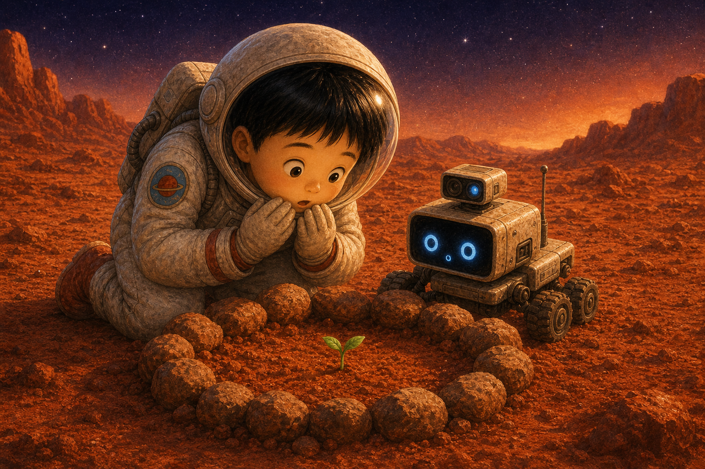
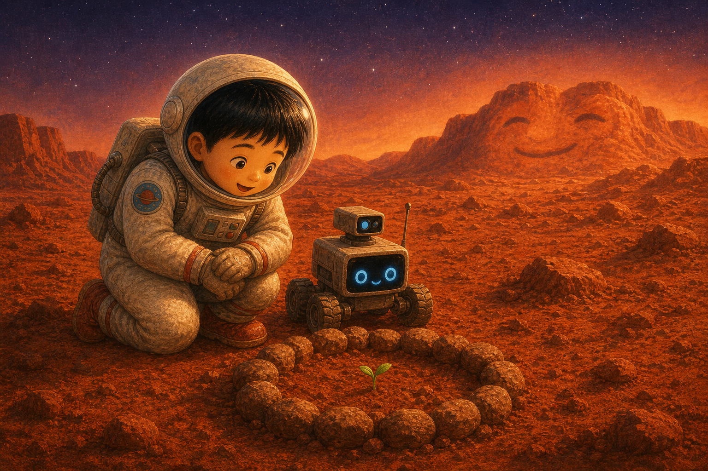
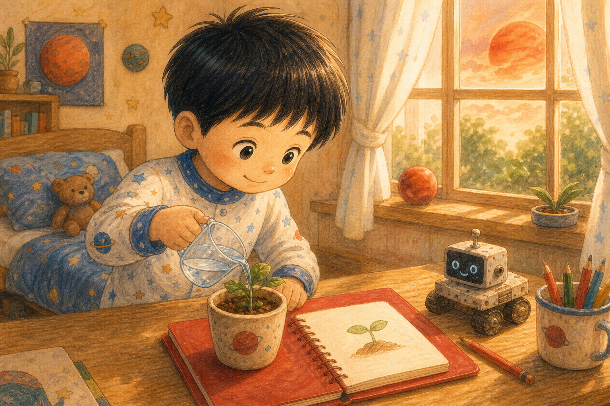

붉은 모래 신발
하늘이는 꿈속에서 붉은 모래 신발을 신고 화성에 도착했어요. 발밑에서는 바삭바삭 작은 소리가 났지요.
"여기는 붉은 행성 화성이야."

하늘이는 꿈속에서 붉은 모래 신발을 신고 화성에 도착했어요. 발밑에서는 바삭바삭 작은 소리가 났지요.
"여기는 붉은 행성 화성이야."

화성 언덕 너머에서 작은 탐사 로봇이 삐빅 인사했어요. 로봇은 하늘이에게 오래된 골짜기 지도를 보여 주었답니다.
궁금한 마음은 로봇 친구도 움직였어요.

하늘이는 골짜기를 따라 걸었어요. 로봇은 아주 먼 옛날 이곳에 물이 흘렀을지도 모른다고 알려 주었지요.
마른 길에도 오래된 이야기가 남아 있었어요.

하늘이 주머니에서 작은 씨앗 하나가 나왔어요. 씨앗은 붉은 모래 위에서 "나도 자랄 수 있을까?" 하고 묻는 것 같았답니다.
하늘이는 씨앗을 조심히 감싸 쥐었어요.

로봇은 그늘진 곳에서 작은 얼음 조각을 찾았어요. 하늘이는 얼음이 녹아 물방울이 되도록 손바닥 햇빛을 모았지요.
작은 물 한 방울도 귀한 선물이었어요.

하늘이와 로봇은 씨앗 주변에 작은 돌담을 만들었어요. 붉은 바람이 불어도 씨앗이 날아가지 않게요.
희망은 돌봄을 만나야 자랄 수 있어요.

갑자기 먼지 폭풍이 몰려왔어요. 하늘이는 로봇과 함께 씨앗을 지키며 낮은 목소리로 노래했답니다.
무서운 바람도 함께 있으면 견딜 수 있어요.

폭풍이 지나간 뒤, 붉은 모래 사이에서 아주 작은 초록 점이 올라왔어요. 하늘이는 숨을 참고 바라보았지요.
"작지만 진짜 싹이야!"

화성은 붉은 언덕을 환하게 물들이며 웃었어요. 작은 싹 하나가 차가운 풍경을 조금 따뜻하게 바꾸었답니다.
희망은 아주 작은 색으로도 시작돼요.

아침에 깬 하늘이는 빨간 노트에 씨앗 그림을 그렸어요. 그리고 물 한 컵을 자기 화분에도 나누어 주었지요.
화성에서 배운 돌봄이 하늘이의 방에서도 자라났답니다.